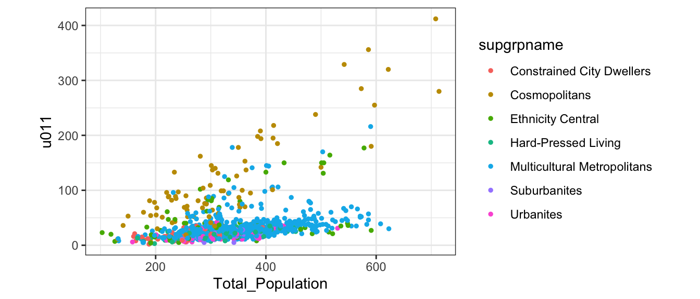
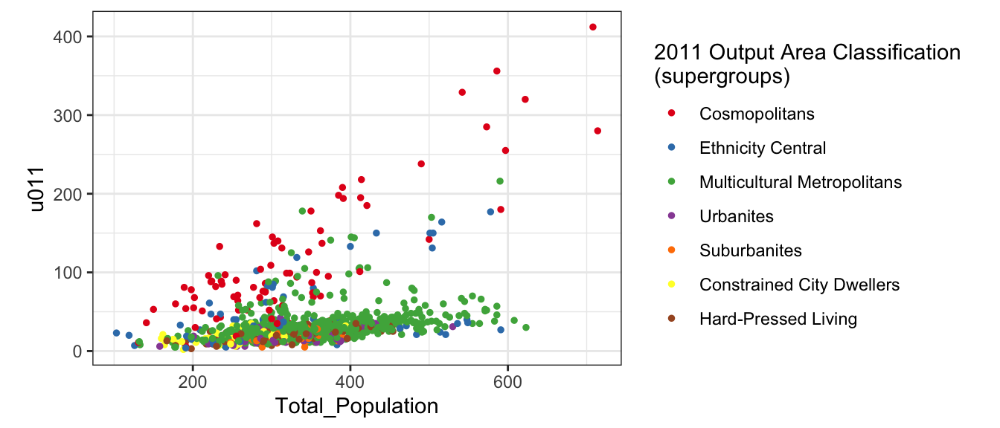

7 Exploratory analysis
This work is licensed under the GNU General Public License v3.0. Contains public sector information licensed under the Open Government Licence v3.0.
7.1 Introduction
library(tidyverse)
library(knitr)
library(broom)
leicester_2011OAC <- read_csv("2011_OAC_Raw_uVariables_Leicester.csv")u011 Age 20 to 24
7.2 Data visualisation
figures in RMarkdown message=FALSE, warning=FALSE, fig.height = 4, fig.width = 4

fig.height = 4 only
colour vs fill https://ggplot2.tidyverse.org/reference/aes_colour_fill_alpha.html
leicester_2011OAC %>%
ggplot(
aes(
x = Total_Population,
y = u011,
colour = supgrpname
)
) +
geom_point(size = 1) +
coord_fixed(ratio = 1) +
theme_bw()
forcats, fct_reorder and
colorbrewer
\n
leicester_2011OAC %>%
ggplot(
aes(
x = Total_Population,
y = u011,
colour = fct_reorder(supgrpname, supgrpcode)
)
) +
geom_point(size = 1) +
scale_colour_brewer(palette = "Set1") +
coord_fixed(ratio = 1) +
guides(
colour = guide_legend(title = "2011 Output Area Classification\n(supergroups)")
) +
theme_bw()
leicester_2011OAC %>%
mutate(
perc_age_20_to_24 = (u011 / Total_Population) * 100
) %>%
ggplot(
aes(
x = perc_age_20_to_24
)
) +
geom_histogram(
binwidth = 1
)+
xlab("Percentage of residents aged 20 to 24") +
theme_bw() 
leicester_2011OAC %>%
mutate(
perc_age_20_to_24 = (u011 / Total_Population) * 100
) %>%
ggplot(
aes(
x = supgrpname,
y = perc_age_20_to_24
)
) +
geom_boxplot() +
xlab("2011 Output Area Classification (supergroups)") +
ylab("Percentage of residents aged 20 to 24") +
theme_bw() +
theme(
axis.text.x = element_text(angle = 90, hjust = 1)
)
leicester_2011OAC %>%
mutate(
perc_age_20_to_24 = (u011 / Total_Population) * 100
) %>%
ggplot(
aes(
x = fct_reorder(supgrpname, supgrpcode),
y = perc_age_20_to_24,
fill = fct_reorder(supgrpname, supgrpcode)
)
) +
geom_boxplot() +
scale_fill_brewer(palette = "Set1") +
xlab("2011 Output Area Classification (supergroups)") +
ylab("Percentage of residents aged 20 to 24") +
guides(
fill = guide_legend(title = "2011 Output Area Classification\n(supergroups)")
) +
theme_bw() +
theme(
axis.text.x = element_text(angle = 90, hjust = 1)
)
7.3 Exercise 6.1
Create a RMarkdown analysis docuement that replicates the analysis above for another age group of your choice. Include conclusions that you can draw from each plot (about 100 words per plot). Also, geom_bin2d()
7.4 Exploratory statistics
| OA11CD | supgrpname | perc_age_20_to_24 |
|---|---|---|
| E00169455 | CP | 57.65125 |
| E00169481 | CP | 60.70111 |
| E00169446 | CP | 60.75085 |
| E00168096 | CP | 58.19209 |
| E00169043 | CP | 56.83761 |
| perc_age_20_to_24 | |
|---|---|
| nbr.val | 969.000 |
| nbr.null | 0.000 |
| nbr.na | 0.000 |
| min | 1.064 |
| max | 60.751 |
| range | 59.687 |
| sum | 10238.502 |
| median | 7.514 |
| mean | 10.566 |
| SE.mean | 0.304 |
| CI.mean.0.95 | 0.596 |
| var | 89.386 |
| std.dev | 9.454 |
| coef.var | 0.895 |
recode, dplyr vs car
| CD | CP | EC | HP | MM | SU | UR | |
|---|---|---|---|---|---|---|---|
| nbr.val | 36.000 | 83.000 | 57.000 | 101.000 | 573.000 | 54.000 | 65.000 |
| nbr.null | 0.000 | 0.000 | 0.000 | 0.000 | 0.000 | 0.000 | 0.000 |
| nbr.na | 933.000 | 886.000 | 912.000 | 868.000 | 396.000 | 915.000 | 904.000 |
| min | 1.064 | 3.141 | 2.066 | 1.515 | 2.490 | 1.462 | 2.256 |
| max | 12.963 | 60.751 | 36.299 | 11.261 | 52.507 | 9.562 | 13.505 |
| range | 11.899 | 57.609 | 34.233 | 9.746 | 50.018 | 8.100 | 11.249 |
| sum | 252.108 | 2646.551 | 838.415 | 619.266 | 5214.286 | 295.867 | 372.010 |
| median | 6.854 | 30.457 | 10.881 | 6.053 | 7.880 | 5.476 | 5.380 |
| mean | 7.003 | 31.886 | 14.709 | 6.131 | 9.100 | 5.479 | 5.723 |
| SE.mean | 0.471 | 1.574 | 1.373 | 0.172 | 0.230 | 0.233 | 0.264 |
| CI.mean.0.95 | 0.956 | 3.131 | 2.751 | 0.341 | 0.452 | 0.467 | 0.528 |
| var | 7.983 | 205.556 | 107.523 | 2.980 | 30.285 | 2.929 | 4.545 |
| std.dev | 2.825 | 14.337 | 10.369 | 1.726 | 5.503 | 1.712 | 2.132 |
| coef.var | 0.403 | 0.450 | 0.705 | 0.282 | 0.605 | 0.312 | 0.372 |
| skewness | 0.322 | 0.067 | 0.633 | 0.124 | 3.320 | 0.005 | 1.042 |
| skew.2SE | 0.410 | 0.127 | 1.001 | 0.258 | 16.266 | 0.008 | 1.753 |
| kurtosis | -0.142 | -0.825 | -1.009 | 0.220 | 15.143 | -0.391 | 1.441 |
| kurt.2SE | -0.093 | -0.789 | -0.810 | 0.231 | 37.156 | -0.306 | 1.229 |
| normtest.W | 0.965 | 0.980 | 0.889 | 0.993 | 0.684 | 0.991 | 0.937 |
| normtest.p | 0.310 | 0.239 | 0.000 | 0.886 | 0.000 | 0.954 | 0.002 |
Levene’s test for equality of variance in different levels
- If significant, the variance is different in different levels
Used to test assumptions of regression, but also useful here.
## Levene's Test for Homogeneity of Variance (center = median)
## Df F value Pr(>F)
## group 6 62.011 < 2.2e-16 ***
## 962
## ---
## Signif. codes: 0 '***' 0.001 '**' 0.01 '*' 0.05 '.' 0.1 ' ' 1